HollywoodFX
- Downloads
- 200,984
- Favourites
- 190
- Mod lists
- 358
What on God’s green earth is this?
The various THE CITY special effects are somewhat anemic, or completely missing (e.g. shooting ground with grass generates no impacts at all). HollywoodFX is a mod that represents the wholesale engoodening of special effects. Think EFT RAID. Think the Lobby Scene from The Matrix. Think John Woo movies. If your target isn’t covered in smoke, debris and sparks after emptying a mag into them, we aren’t doing it right. That being said, I don’t want to go overboard and turn it into a complete joke. The idea is to strike a nice balance.
Screenshots really don’t do this mod justice, check out the videos on the Media tab. NB: the videos will invariably get a bit outdated over time, but they are representative of what the mod does.
- High definition muzzle blasts taking into effect the muzzle device, porting, bullet powder amount, barrel length, etc.
- Tracer effects that put the New Years Eve fireworks to shame.
- High resolution, artisanal and handcrafted impacts for every single material type in the game
- Bullet energy based impact composition. The bigger the bullet, the bigger the oomph.
- Cinematic explosions with confinement simulation
- Artisanal tonemapping, hbao, lighting & bloom in a bundled HollywoodGraphics mod
- Incompatible with Amand’s Graphics mod - turns itself off to avoid issues
- Suppression & concussion effects
- Battle Ambience: lingering smoke, dust, etc for that authentic RAID vibe.
- Fully compatible with FIKA but doesn’t require it. Only installs into player setups, not the dedicated host.
- Presets (you can click a button to configure everything to my settings for example)
For even more CinemaTM, use together with my immersive and gameplay tuned 3rd Person Camera Mod.
There are too many to list, the whole SPT and FIKA modding community helped make this happen. Without the respective dev teams, neither SPT or FIKA would exist. To name perhaps the most influential individuals (in no particular order):
- ssh (without his SDK this mod would not exist)
- Asailant for the awesome mod icon & logo
- Fontaine
- Hazelify
- Goofbol
- EpicRangeTime
- jpdarkone
- RetroLogic
- Amand for the inspiration to improve THE CITY’s graphics
- A dozen or so concerned horses
…and many others who made suggestions and took time to provide feedback.
Impacts
Basic Impacts
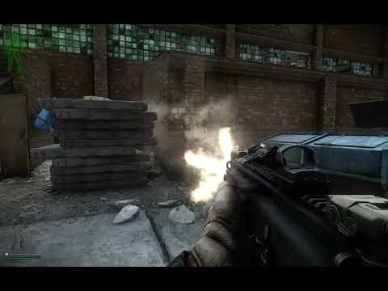
Metal Impacts
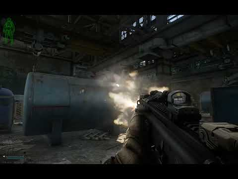
Wood Impacts
https://www.youtube.com/watch?v=Fx5vI_uKBWM
Tracers
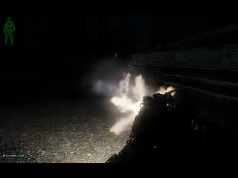
Dust & Ambience
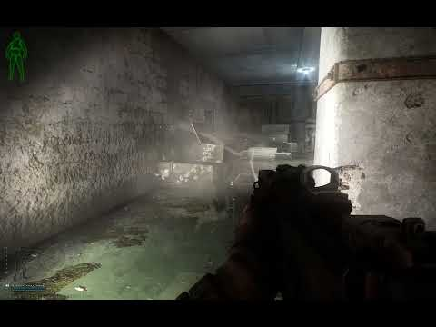
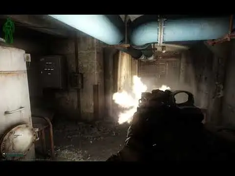
Muzzle Flashes & Smoke
First Person
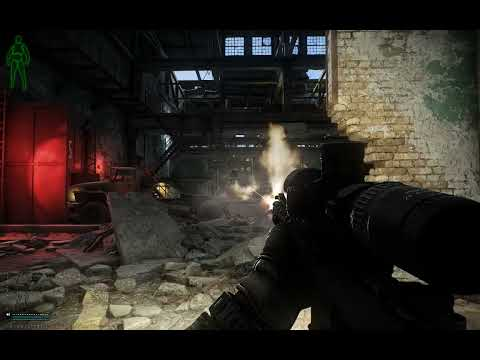
Third Person
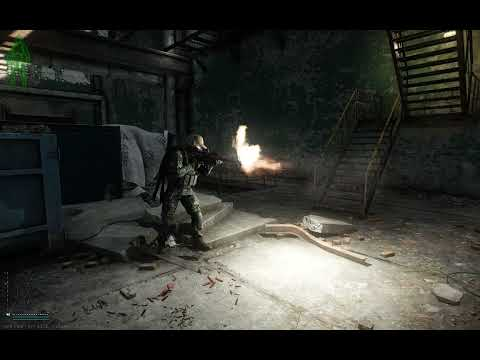
Suppressed
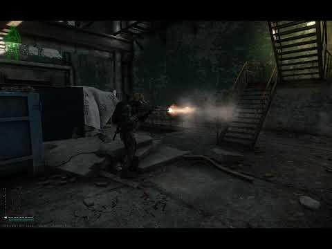
Gore
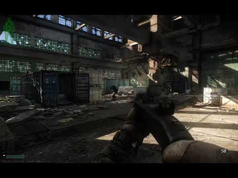
Explosions
In (Semi)Open Space
https://www.youtube.com/watch?v=_iYNABmdx5s
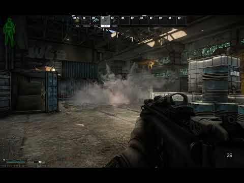
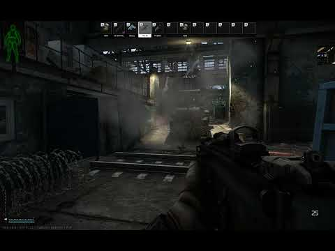
Confined
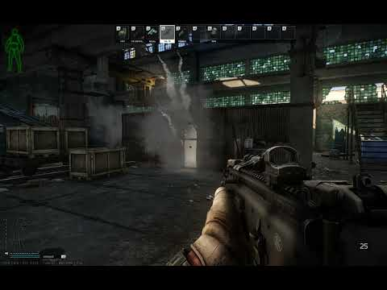
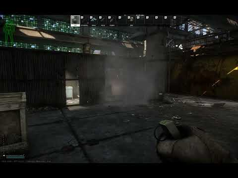
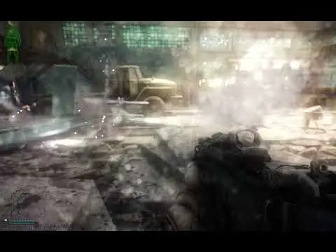
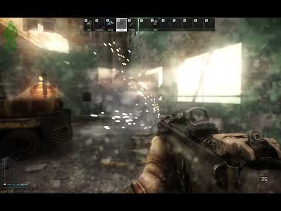
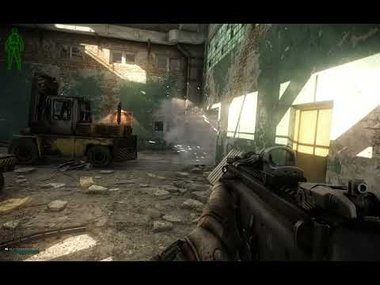
Atmospherics
HollywoodGraphics
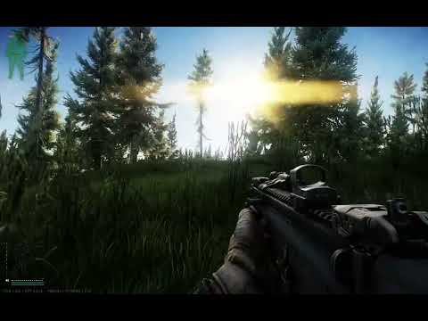
Simply extract the zip file into your SPT game folder.
DrakiaXYZ’s gif for installing a mod:

There are two main components in the mod:
- HollywoodFX: replaces, adds and enhances the various special effects in the game.
- HollywoodGraphics: improves the graphics and lighting fidelity, along with a few bells and whistles like lens flares.
- Note: HollywoodGraphics will turn itself off if Amand’s Graphics mod is installed to avoid compatibility issues
Each of these components has it’s own F12 menu to add a bit of structure. I tried to put reasonably descriptive tooltips over every configuration setting, so I’m not going to repeat things here (it’d get out of date fairly fast anyway).
A notable feature is the configuration templates, which allow you to quickly reset everything to defaults, or use the settings that I personally prefer:
NB: Ignore the reset button, it does nothing in this particular case.
HollywoodFX in and itself isn’t particularly performance intensive. I took a lot of care to write efficient code, I religiously avoid allocations andcarried out a significant amount of profiling**.** Some impact is inevitable due to the multitude of high fidelity effects. In practice I observe no more than a couple of % during firefights. If you have noticeable performance issues, it is likely to be overly ambitious graphics settings for your hardware, mod conflicts, hardware issues, OS issues, driver issues, etc. People successfully run HollywoodFX on GTX 1080ti cards and 6-7 year old CPUs, albeit with appropriately low quality settings.
That being said, there are quite a few avenues to alleviate problems. Generally, there are two main issues that crop up:
- VRAM bottleneck. You don’t have enough VRAM available for the texture quality and screen resolution you have picked.
- CPU bottleneck. You have a potato CPU, it has throttling issues, you are running too many computationally intensive tasks, etc.
We’ll deal with each of these in turn. Note, I’m not going to offer generic advice like using process lasso, tuning your bios, etc - just pointers at how to diagnose things in-game and what settings have the biggest impact.
VRAM Issues
This is by far the most common problem, as THE CITY is not good at managing the VRAM budget. It is driven by two settings: the Screen Resolution and Texture Quality you configure in-game. If you set these too high and run out of VRAM, the game will have to start copying data between RAM and VRAM all the time, causing stutters.
As a guidance, you should have at least 16gb VRAM if you intend to run Texture Quality at “high” with a Screen Resolution of 1440p and above. If you have less than 12gb VRAM, pick medium or low Texture Quality.
The first step to diagnosing VRAM issues is the open the command console with the ` key and run the command “fps 3” without the quotes. The game will show a little diagnostic panel on the top right like this:
The important lines you want to look at are: VRAM Budget and VRAM Usage. If your Usage gets to within 80-90% of the Budget, your texture quality settings are likely too high. Try dropping them down a notch and see if the Usage improves. You really want this number no more than 70-75% of the Budget to avoid hiccups. Note, this number is likely to be heavily map dependent. Don’t test it on Factory, that’s the least problematic map. Test it on Shoreline or Streets even.
Dropping the Screen Resolution should be a last resort, but can also help as the game picks texture sizes dynamically to maximize the fidelity at your Screen Resolution.
CPU Issues
The effects with the highest CPU impact are explosions and finisher gore (volumetric blood and particles created during a killshot). These create a fair amount of particles and explosions require some upfront computations. While modern CPUs should be able to process these without a hitch, older Intel models can struggle. If you get consistent stutters during explosions and when enemies die on-screen, these might be causing problems. People with AMD CPUs with 3d cache and top of the shelf Intel CPUs should not struggle, and if you do, the issue is elsewhere.
The sliders to concentrate on are these:
In particular, I recommend decreasing Smoke & Dust Density to 0.5 (or even lower). If you still have issues, try decreasing Compute Fidelity to 0.5 as well. Note, very low Compute Fidelity values will compromise the accuracy of confinement detection and you might see stuff going through solid walls.
The section in question is this:
Try decreasing squirts, spray and finishers to 0. The default values are quite conservative and should be fine even on older hardware, but exceptionally old CPUs might struggle.
Version
2.0.0
- Major rework of all dust & smoke effects
- Major rework of gore & blood
- Handwritten, artisanal shaders to bring dust & smoke effects into the 21st century
- Dynamic erosion, noise, velocity based distortion & advection, etc.
- Dynamic screen space lighting for particles. Very cheap and looks much better than THE CITY’s crappy smoke lighting.
- Hugely simplified HollywoodGraphics
- Removed all fog & lighting hacks
- MaTSix is doing amazing work with lighting, clouds, fog, terrain etc. I recommend switching to his mods for these.
Version
1.8.4
Minor fixes/cleanup before exciting new features start coming in:
- Fixed motion blur not applying unless the sliders are fondled
- Fatality bleedout is now based on a chance rather than always happening
Version
1.8.3
This is a bad release for bad people who asked for bad features and should feel bad.
- Scope surround Depth of Field (in the HollywoodFX config)
- Motion Blur (in the HollywoodGraphics config)
Version
1.8.2
- Gore rework!
- Impact location specific gore
- Arterial bleed effects
- Significant performance optimization of gore effects
- High resolution decals for body armor & helmet impacts
- MOAR DUST!
Version
1.8.1
- Added full support for Labyrinth.
- Various minor fixes.
Thanks to Pawell on the Forge for reporting the issues.
Version
1.8.0
SPT4 Release
Version
1.7.5
- Performance engoodening
- Uncursed the fog at sunrise
This is the last release for SPT 3.11, but please do not let this distract you from the fact that in 1998, The Undertaker threw Mankind off Hell In A Cell, and plummeted 16 ft through an announcer’s table.
Version
1.7.4
- Greatly improved bullet impact dust.
- New Fog (TM) - 100% less oppressive, 100% more cinema.
- The fog has significant vertical separation. Seek high ground for better visibility.
- Dynamic indoor fog suppression.
- Significant code clean-up around bullet impacts, bug fixes, etc..
Thanks to all the testers on the SPT & Fika discords who provided valuable feedback!
Version
1.7.2
HOTFIX #2
Disabling lens dirt no longer causes extreme bloom. Thanks for Fontaine and Shibdib for reporting.
Version
1.7.1
HOTFIX
* Smoke grenades no longer explode, duh. Thanks to Rexana on the WTT discord for catching this one.
* Replaced the default lens dirt texture with a much softer and subtle variant. Should fix the “why am I a dirty camera?” complaints.
* Set “Lens Dirt Texture” to LensDirt4.png if you yearn for the original.
Version
1.7.0
MASSIVE UPDATE
* Cinematic explosions with confinement simulation
* Artisanal tonemapping, hbao, lighting & bloom in a bundled HollywoodGraphics mod
* Suppression & concussion effects
* Presets (you can click a button to configure everything to my settings for example)
* LoD & detail overrides separately for each map
* Significantly improved all impacts, added more variety, sparks look nicer, etc
* Body impacts now generate dust/smoke puffs when armor is hit. Blood is only emitted if the bullet penetrated.
* Various small fixes and improvements
Thanks to the many testers who provided feedback and encouragement!
NB: This is a very large update. There may be bugs and issues. I’ll strive to fix everything as quickly as possible, but I need feedback on the discord including logs and video/screenshots.
Version
1.6.9
Minor hotfix release
Features:
* Slider for muzzle smoke and spark emission rates
Squashed bugs:
* Dust particles were rendered incorrectly on widescreen resolutions
* Blood mist emission rate was overridden by blood spray (lel)
Version
1.6.8
* Blood & dust sprays are now more visible from a distance but less oppressive up close
* Minor ragdoll tuning, disable upwards impulse on passive dead bodies duh
* Less muzzle flash size variance
* Smaller wound decals
* LOD fixes
I lied when I said 1.6.7 will be the last release for SPT 3.11
Version
1.6.7
* Sliders for extending the LOD and environmental detail render distance. All rendered on the GPU so if you are CPU limited, you can make Woods look less like World of Warcraft 2004 without any FPS loss.
* Squashed a possible NRE when cleaning up gore finisher effects from dead bodies, thanks for the Rt. Hon. Lady Bugcat for the report
* Various small fixes & cleanup.
* NB: This is likely the last release for 3.11. The mod has already been ported to SPT4 and work is underway on more goodies!
Version
1.5.0+rc1
* 3.11 migration
* Tracer round impacts!
* Tracer tip fragments fly off depending on the hardness of the surface hit, generating sparkles and colorful lights to delight old and young, but not the scav whose brain you splattered.
* Tracer rounds generate extra flames, sparks, etc…
* Much more to come, this is just the first prototype of the tracer effects.
Version
1.4.0
Note: Fairly chunky update again. I recommend that you back up your configuration and start with a fresh setup.
* Overhauled blood & gore
* Finisher effects for killshots with volumetric blood
* Bleed-like effects now get attached to the ragdoll
* Penetrating shots generate high definition blood splatter behind enemies (16 different varieties)
* Bleed drops variety and quality vastly improved (16 different varieties)
* Bullet wound decals now appear on dead bodies as well
* Ambient smoke improved
* Dynamic ragdoll reactivation! No need to keep active ragdolls eating your CPU.
* Removed blood effects appearing when the local player is shot at
* A lot of foundational work under the hood to make further work easier & more efficient
Thanks to Devraccon, Arttumiro, Soren and all the kind people on the SPT and Fika discords for testing and providing feedback, much appreciated!
NB: This is the last major release before the migration to SPT 3.11. See you on THE CITY 0.16!